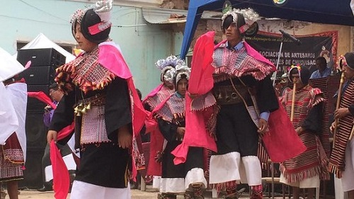
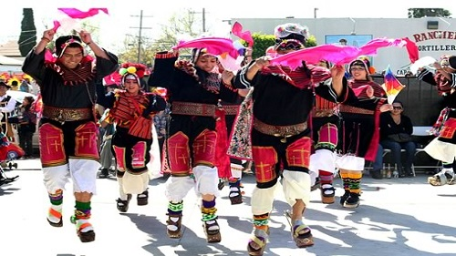

Pujllay
HISTORIA
La danza pujllay tiene su origen en las comunidades y pueblos de la cultura Yampara, místicamente fusionada con los legados de la historia, que muestran la combinación de lo indígena y colonial. La danza del pujllay tiene un gran significado ritual para el pueblo Yampara, esta danza esta estrechamente vinculado con la época de lluvias, la abundancia y la armonía en agradecimiento a las deidades y antepasados difuntos por una cosecha próspera.

Pujllay
VESTIMENTA
Las mujeres visten p'acha montera (sombrero con dos puntas y mucha decoración), aymilla (vestido), aqsu (falda tejida con adornos de animales y eventos de la vida cotidiana), lliklla (aguayo sostenido por un prendedor de plata). Los hombres usan montera (hecha de cuero negro), kunkaunku (pequeño poncho), aymilla (camisa), sinchu (cinturón ancho de cuero curtido de donde cuelgan campanillas que dan ritmo a la música), calzuna (pantalón negro con volantes blancos), sunri (polainas) y las llamativas ujutas (sandalias de suela muy alta con espuelas).